R.utils::sourceDirectory(here::here("src", "functions"))Legends and arrangement
Overview
Out of the box, {ggplot2} creates some really good data visualizations. When you map variables to aesthetics other than x or y, the plot will include a legend. A plot legend represents a key labeling system for understanding different data by colors, patterns, and symbols. For example, a legend could contain a variable name, a listing of variable levels, and some color or shape aesthetic used to visually discriminate those variable levels. The legend labels assumes some position, some font, some format, and some color. Aesthetic properties of a legend take on some color, shape, size, and orientation. In most cases, these elements match the aesthetic properties of the plot but they do not need to and they can be customized to suit the needs of a given plot. In fact, all properties of a plot legend can changed in {ggplot2}.
If a legend is created automatically with some geom_*(), it can be removed. If a legend is not created automatically, it can be added to the plot using functions like legend(). And importantly, legends can be modified to suit your needs using functions like theme() and guides() as described in this module. A basic reason to change the legend appearance without changing the plot is to make the legend more readable and user friendly.
To Do
Review corresponding Canvas lectures.
Readings
External Functions
Provided:
view_html(): for viewing data frames in html format, from /src/functions/view_html.R
Libraries
- {dplyr} 1.1.4: for selecting, filtering, and mutating
- {ggplot2} 3.5.1: for plotting
- {forcats} 1.0.0: for factor reordering
Load libraries
pacman::p_load(dplyr, ggplot2, forcats)Loading Data
To examine some associations, we will use some swimming event times which can be accessed from:
https://raw.githubusercontent.com/slicesofdata/dataviz24/main/data/processed/cleaned-2023-cms-invite.csvTo access the data, either read the file directly from the url using read.csv() and assign the data frame a name like SWIM:
read.csv("https://raw.githubusercontent.com/slicesofdata/dataviz24/main/data/processed/cleaned-2023-cms-invite.csv")
Or download it and save to the /data/processed directory and read from there.
SWIM <- read.csv(here::here("data", "processed", "cleaned-2023-cms-invite.csv"))Creating Some Base Plots
We are going to create some plot objects that we will modify later to illustrate how to use the functions mentioned above to change characteristics of legends in our data visualizations.
Plot A: A plot for which we map a single variable to the color aesthetic:
(base_plot <- SWIM |>
filter(Event == "Freestyle") |>
filter(Team != "Mixed") |>
filter(Distance == 100) |>
ggplot(mapping = aes(x = Split50,
y = Time,
color = Team
)
) +
geom_point(position = position_jitter(), alpha = .7)
)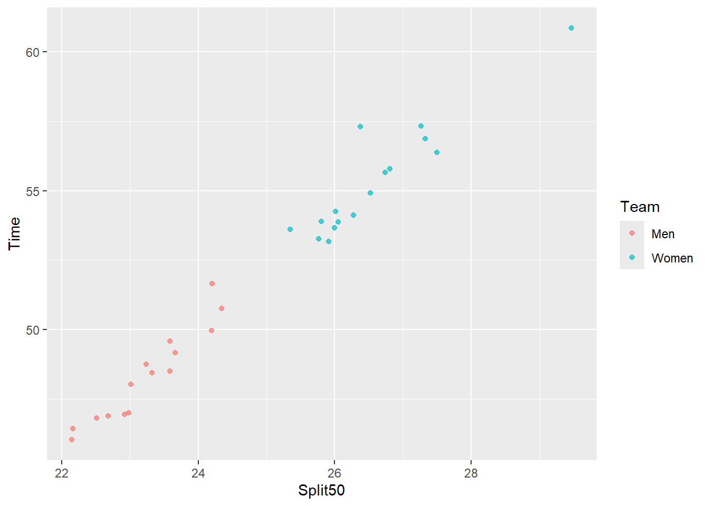
#base_plot + labs(title = "", tag = "Base Plot")Plot B: For another plot, we map multiple variables to different aesthetics. We will map a single variable to the color aesthetic and a single variable to the size aesthetic. In this case, color is mapped to a discrete variable and size is mapped to a continuous variable.
(base_plot_2 <- base_plot +
geom_point(mapping = aes(color = Team,
size = Time
),
position = position_jitter(),
alpha = .7
)
)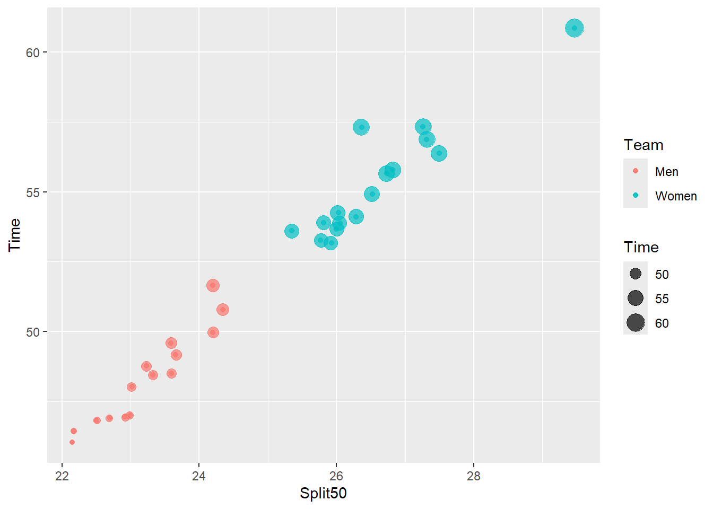
Plot C: We can also create a plot that maps a single variable to multiple aesthetics. We will map a single variable to the size aesthetic and a single variable to both the color aesthetic and the shape aesthetic. When groups are encoded using two aesthetics rather an a single one, this is referred to as redundant encoding.
Claus Wilke discusses Redundant encoding in a chapter of his textbook and we will use redundant encoding to address plot limitations associated with users who have color-vision deficiencies or simply to make the variable levels more distinctive from one another. Redundant encoding is a way to make data visualizations more perceptually efficient which we will discuss in a later module.
In this plot, you will see that the legend also encoded redundantly such that the levels of team vary both in color and in shape. Because team is also confounded with time, the different shapes also differ in size although this is because of a different dimension.
(base_plot_3 <- base_plot +
geom_point(mapping = aes(size = Time,
shape = Team,
fill = Team
),
position = position_jitter(),
alpha = .7,
color = "grey20",
stroke = 1
) +
scale_shape_manual(values = c(21, 24)) # filled circles and triangles
)Along with graduate advisor Steve Franconeri, Christine Nothelfer and colleagues have studied this how redundant encoding helps with visual selection processes like segmentation and grouping. A brief overview can be found on Nothelfer’s website and a related publication is Nothelfer et al., (2017). Redundant encoding strengthens segmentation and grouping in visual displays of data.
Plot D: We can also create a plot for which we map the same variable to different aesthetics. Here, Team to color, size, and shape. Because all of the aesthetics are mapped to the same variable, there is only one legend that encodes all three aesthetics.
(base_plot_4 <- base_plot +
geom_point(mapping = aes(color = Team,
size = Team,
shape = Team,
alpha = Team
),
position = position_jitter()
)
)Warning: Using size for a discrete variable is not advised.Warning: Using alpha for a discrete variable is not advised.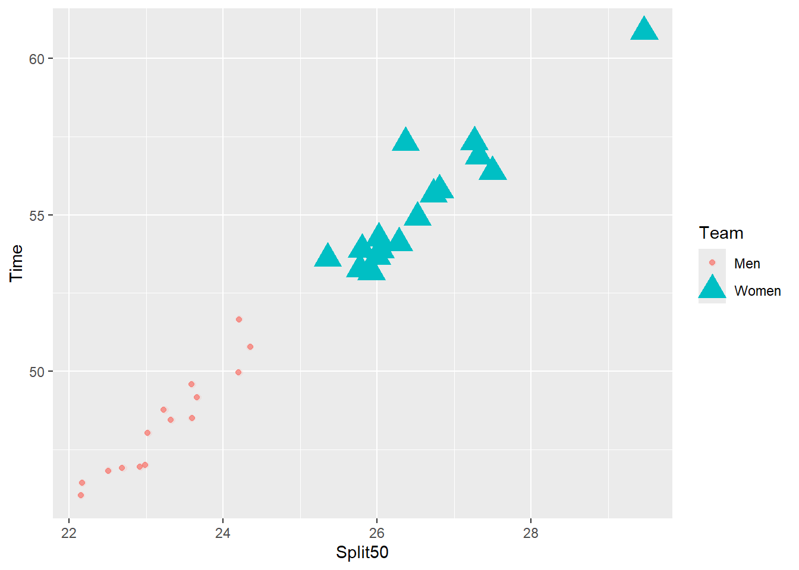
Note: The variables are mapped to aesthetics to illustrate certain functionality rather than appropriateness. Remember that certain aesthetics are designed for specific types of variables, for example, discrete or continuous. If you match variables to aesthetics that violate these expectations you will receive warnings as shown below.
Warning messages:
1: Using size for a discrete variable is not advised.
2: Using alpha for a discrete variable is not advised. Examining Base Plots: Legend Elements
In the initial base plot, you can see that the Team variable mapped to the color aesthetic appears in the legend positioned to the right of the plot. There is a title, which inherently takes on the name of the column variable in the data frame. There are keys, which inherently take on the values of the variations (e.g., levels). If the variable mapped to the aesthetic is a constant, or has no variation or levels within its vector, the legend will nevertheless appear but will present only a single key. In such instances, a legend likely has little to no perceptual utility and should either be removed from the plot and/or be set manually using one of the scale_<aesthetic>_manual() functions.
In the additional base plots, legends again appear to the right of the plot. There are titles for each legend as well as their keys. When there is more than one legend, legends are ordered positionally.
Changing Legend Spatial Positioning
By default, legends will appear to the right of the plot. Legend position, however, can be adjusted to reflect changes in location like left, top, bottom, or location as specified by xy coordinates in the plot space, coordinates that appear inside the plot rather than outside the plot. One of the easiest ways to change the legend position is by using the theme() function and by setting an argument value for legend.position, including "none", "left", "right", "bottom", "top", or a two-element numeric vector containing x and y coordinate values.
Removing a Legend
The most crude way to change a legend position is to remove it completely from the visualization. Although the plots have more than one key in their legend, which add some perceptual utility, there may be instances where you would wish to remove the plot completely. For instance, perhaps you use direct labeling, annotation, or some other detail that obviate the legend’s utility.
Using theme() with a single legend:
base_plot + theme(legend.position = "none")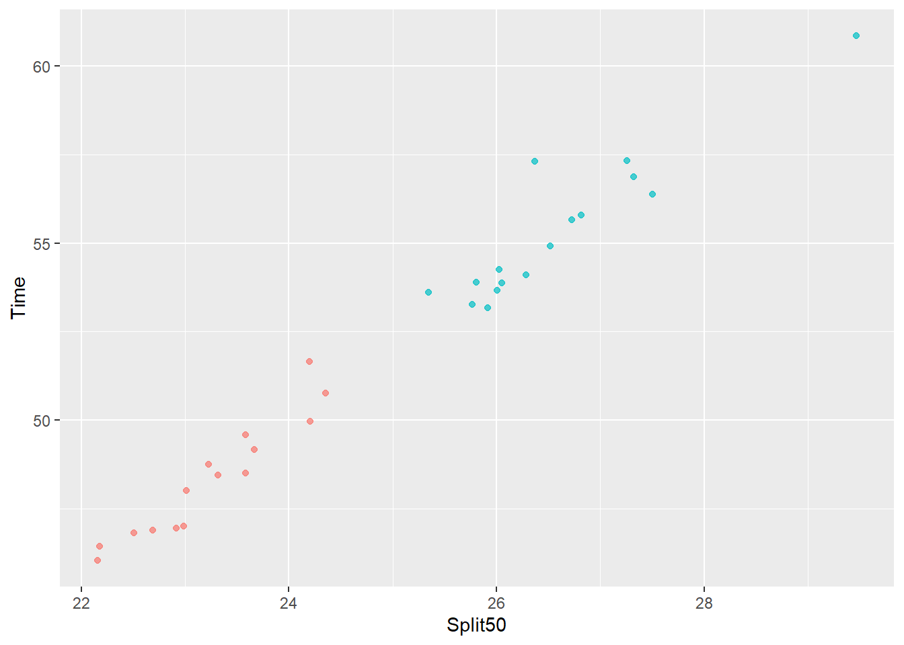
Using theme() with multiple legends:
When there is more than one legend, all legends will be removed when set to legend.position = "none".
base_plot_2 + theme(legend.position = "none")Using guides() with a single legend:
guides(<aesthetic> = "none")
The guides() function allows you to change many legend properties. Although the syntax is a little bit more complicated, guides() along with helper function guide_legend() used to control the legend guide may provide greater flexibility in the long run.
Because the plot contains a variable mapping to color, the legend can also be removed using guides() and either set the aesthetic element to "none" or FALSE. As you will see with other functions, however, FALSE may be deprecated. In addition, although in many examples you will see the aesthetic referenced by its full name color, using its abbreviated name color will achieve the same outcome. For this purpose, my examples in this module will use the abbreviated form so that it matches that which I use in mapping = aes().
base_plot + guides(color = "none")# or base_plot + guides(color = FALSE)
# or base_plot + guides(color = "none") will also workUsing guides() with a multiple legends:
With Plot 2, there is both color and size, so we would specify one or both.
Remove the color legend:
base_plot_2 + guides(color = "none")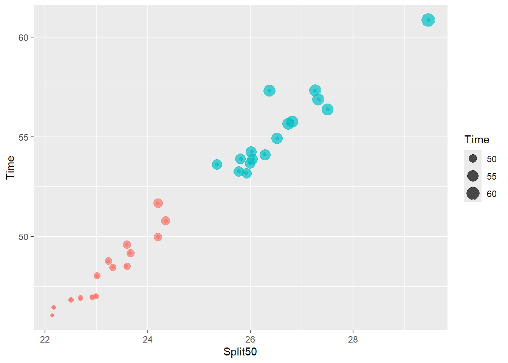
# or base_plot_2 + guides(color = FALSE)Remove the size legend:
base_plot_2 + guides(size = "none")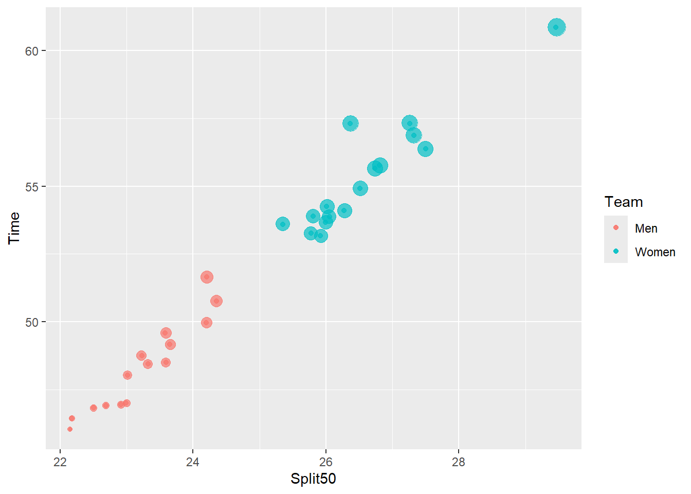
Remove both legends:
base_plot_2 + guides(color = "none",
size = FALSE
)Warning: The `<scale>` argument of `guides()` cannot be `FALSE`. Use "none" instead as
of ggplot2 3.3.4.Using scale_<aesthetic>_<type>() with a single legend:
When using scale_*() functions, you need to set guide = "none" as the use of FALSE has been deprecated.
Remove the color legend:
base_plot +
scale_color_discrete(guide = "none")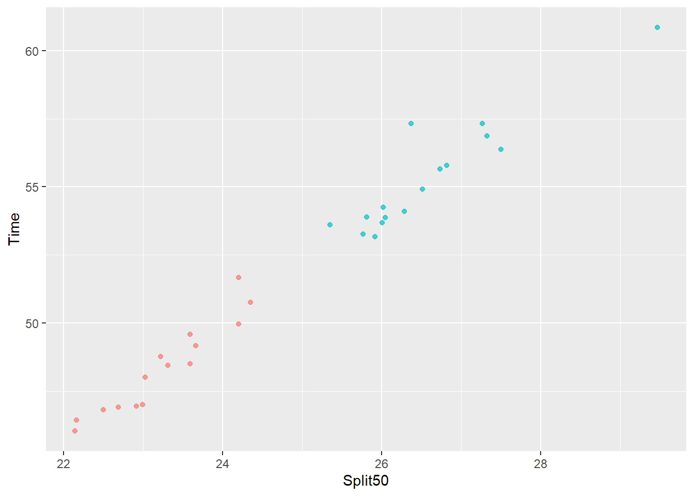
Remove the size legend:
base_plot +
scale_size(guide = "none")Remove both legends:
base_plot_2 +
scale_color_discrete(guide = "none") +
scale_size(guide = "none")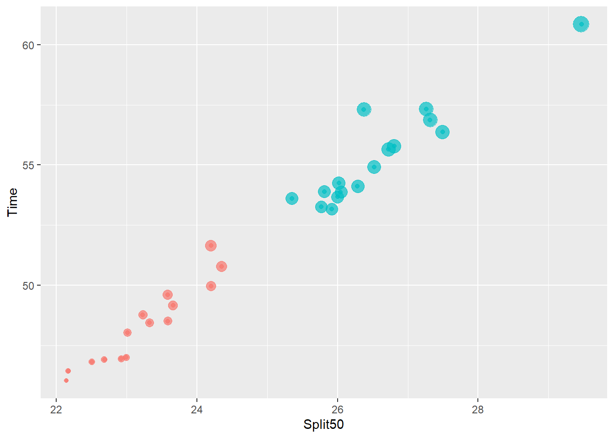
When using specific scale_<aesthetic>_<type>() functions, however, you must ensure that they are applied according to their aesthetic and type or that functions assuming a particular aesthetic and type (e.g., scale_color_gradient()) adhere to the aesthetic and type defined in the plot object. For example, because the variable type is discrete, scale_color_manual(guide = "legend"), scale_color_continuous(guide = "legend"), scale_color_binned(guide = "legend") and some others will throw errors although scale_color_hue(guide = "legend"), scale_color_brewer(guide = "legend") will not throw errors. You just need to remember that your functions need to match the aesthetic and type already used in the plot object. this
Repositioning Legends (Right, Left, Top, Bottom)
The default position is "right". Changing the spatial positioning of the legend can be achieved using the same theme() function and by setting the legend.position argument to "left", "top", "bottom". Only some of these position modifications will be illustrated here. You can also achieve this using the guides() and guide_legend() combination illustrated earlier.
Using theme() with a single legend:
base_plot +
theme(legend.position = "top")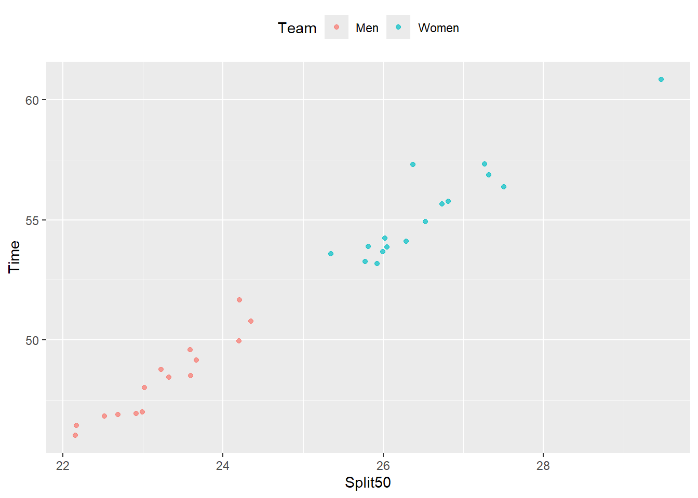
Using theme() with multiple legends:
base_plot_2 +
theme(legend.position = "top")Repositioning Legends (Changing their Spatial Order)
When you have more than one legend, their ordering can be rearranged using guides() and by specifying an order within helper function guide_legend(). To control each legend specifically, remember the guide argument is the aesthetic itself as seen here.
guides(<aesthetic> = guide_legend())
guides(
color = guide_legend(),
fill = guide_legend(),
shape = guide_legend(),
size = guide_legend()
)Creating a Complex Plot
We will create a more complex plot to better illustrate reordering methods.
(plot_complex <- SWIM |>
filter(Event %in% c("Breaststroke", "Backstroke")) |>
filter(Distance <= 200) |>
mutate(Distance = factor(Distance)) |>
ggplot(mapping = aes(x = Split50,
y = Time,
fill = Team,
size = Time,
color = Event,
shape = Distance
)
) +
geom_point()
)
plot_complex contains four legends. The variables are ordered from top to bottom: Time, Event, Distance, and Team and the aesthetics are ordered: size, color, shape and fill. These orders indicated that legends do not appear arranged alphabetically by variable name or aesthetic. Rather than worry about how they are ordered by default, lets just concern ourselves with arranging the order to what we want.
plot_complex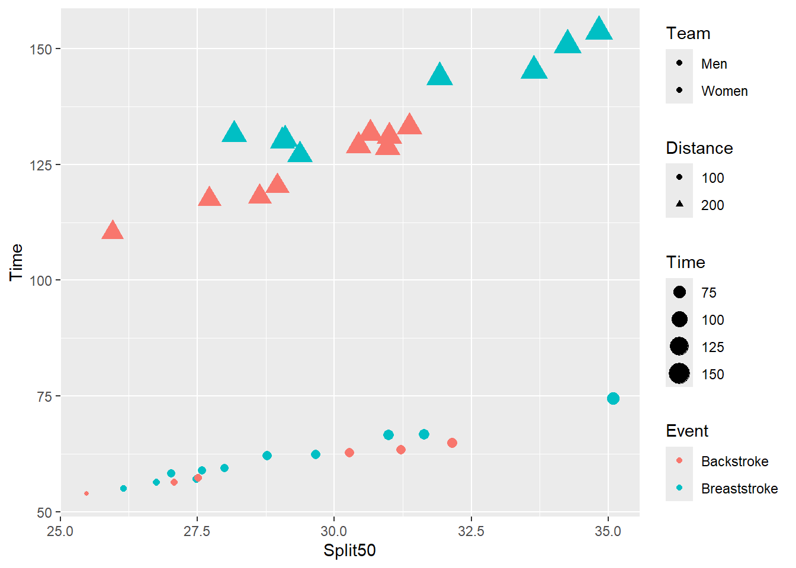
plot_complex +
guides(
color = guide_legend(order = 1),
fill = guide_legend(order = 3),
shape = guide_legend(order = 2),
size = guide_legend(order = 4)
)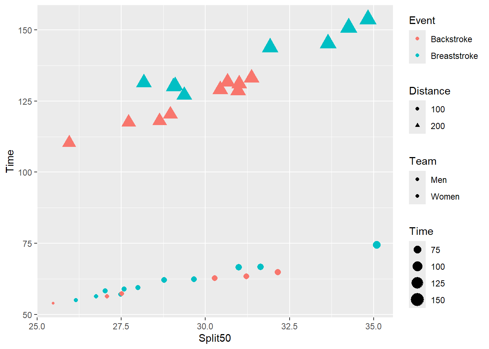
The numbers do not need to be sequential but rather just differ in magnitude.
plot_complex +
guides(
color = guide_legend(order = 21),
fill = guide_legend(order = 1),
shape = guide_legend(order = 38),
size = guide_legend(order = 49)
)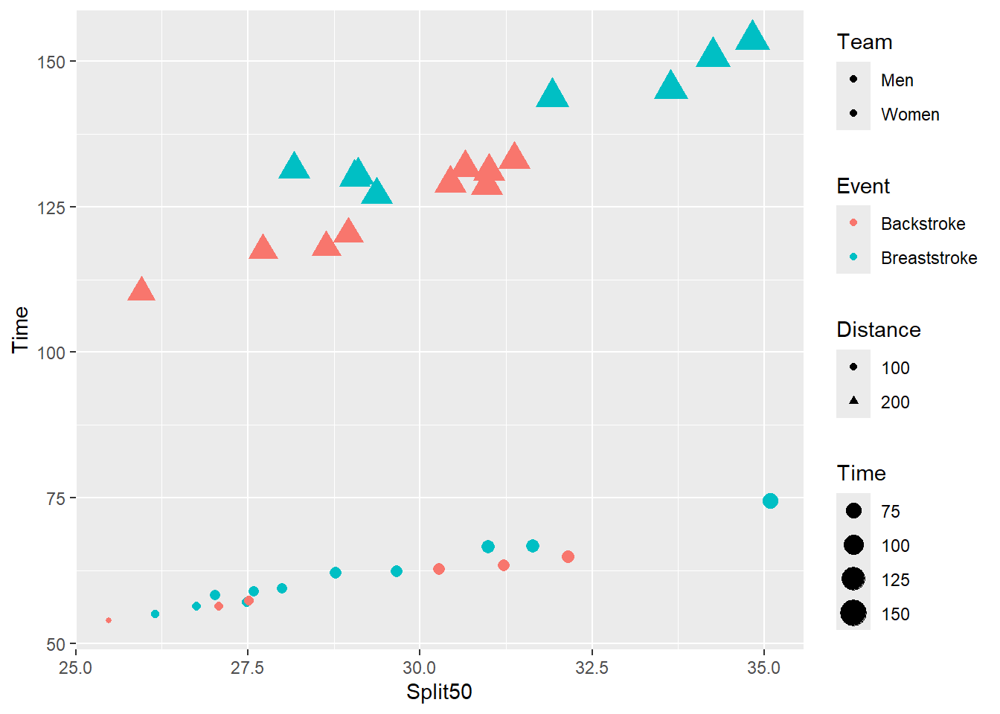
Note: If you wish to make changes to a legend corresponding to a continuous aesthetic like color (or color) may be, guide_legend() will not work. You will need to use guide_colorbar() as show here.
SWIM |>
filter(Event %in% c("Breaststroke", "Backstroke")) |>
filter(Distance <= 200) |>
mutate(Distance = factor(Distance)) |>
ggplot(mapping = aes(x = Split50,
y = Time,
fill = Team,
size = Time,
color = Time,
shape = Distance
)
) +
geom_point() +
guides(
color = guide_colorbar(order = 1),
fill = guide_legend(order = 2),
shape = guide_legend(order = 3),
size = guide_legend(order = 4)
)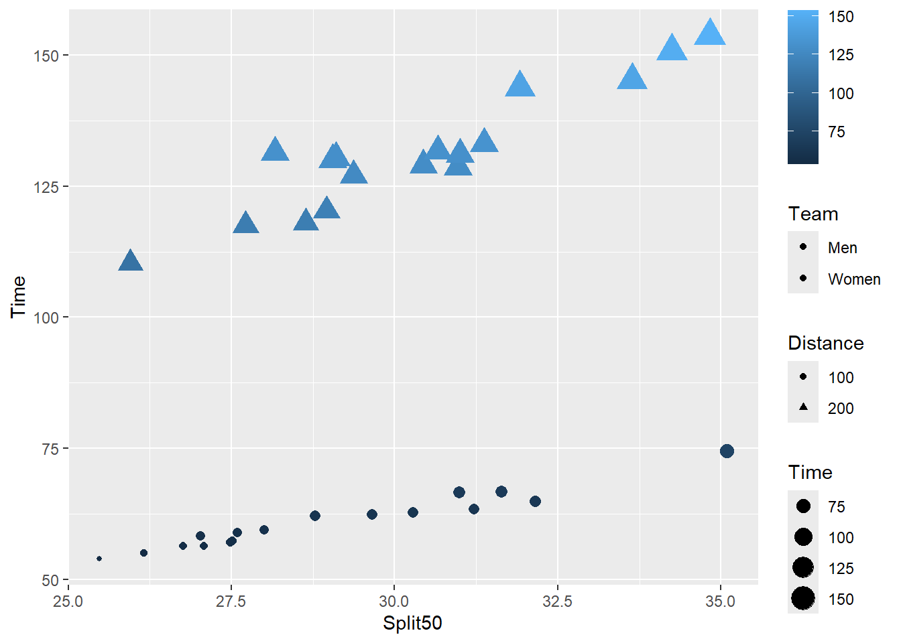
Repositioning Legends (xy Coordinates)
In addition to global positioning, you can have more direct control over the exact coordinates of the legend position if the gross location options are not appropriate. This type of repositioning is necessary when you want to position a legend inside the plot itself rather than next to it.
You will need to do this by passing arguments to two parameters. First, you will need to specify that the legend should be “inside” the plot. Secondm specify a a location vector according to x and y coordinates.
legend.position = "inside"legend.position.inside = c(?, ?)
For example:
base_plot +
theme(legend.position = "inside",
legend.position.inside = c(.5, .5))The fine-grained tuning is achieved by specifying a two-element vector for the xy coordinates of the plot but not according to the x and y axis scales. Using four xy coordinate pairs, we can see that the plot ranged from 0,0 xy to 1,1 xy so our numeric values need to fall between 0.0 and 1.0 inclusive.
suppressWarnings(plot(gridExtra::arrangeGrob(
base_plot +
theme(legend.position = "inside",
legend.position.inside = c(0, 0)) +
labs(title = "legend.position = c(0, 0)"),
base_plot +
theme(legend.position = "inside",
legend.position.inside = c(0, 1)) +
labs(title = "legend.position = c(0, 1)"),
base_plot +
theme(legend.position = "inside",
legend.position.inside = c(1, 0)) +
labs(title = "legend.position = c(1, 0)"),
base_plot +
theme(legend.position = "inside",
legend.position.inside = c(1, 1)) +
labs(title = "legend.position = c(1, 1)"),
ncol = 2
))
)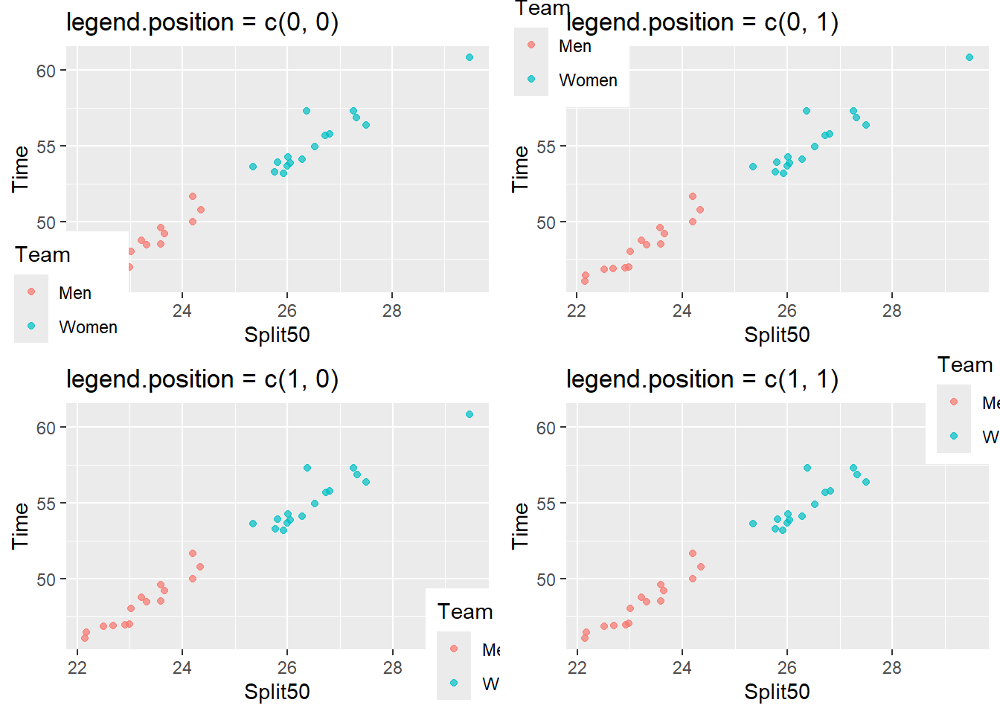
Taken together, legend.position.inside = c(.5, .5) will position the legend in the plot center as long as legend.position = "inside" is also declared. If you do not specify legend.position = "inside", you will observe behavior that will likely not align with your expectations.
base_plot +
theme(legend.position = "inside",
legend.position.inside = c(.5, .5))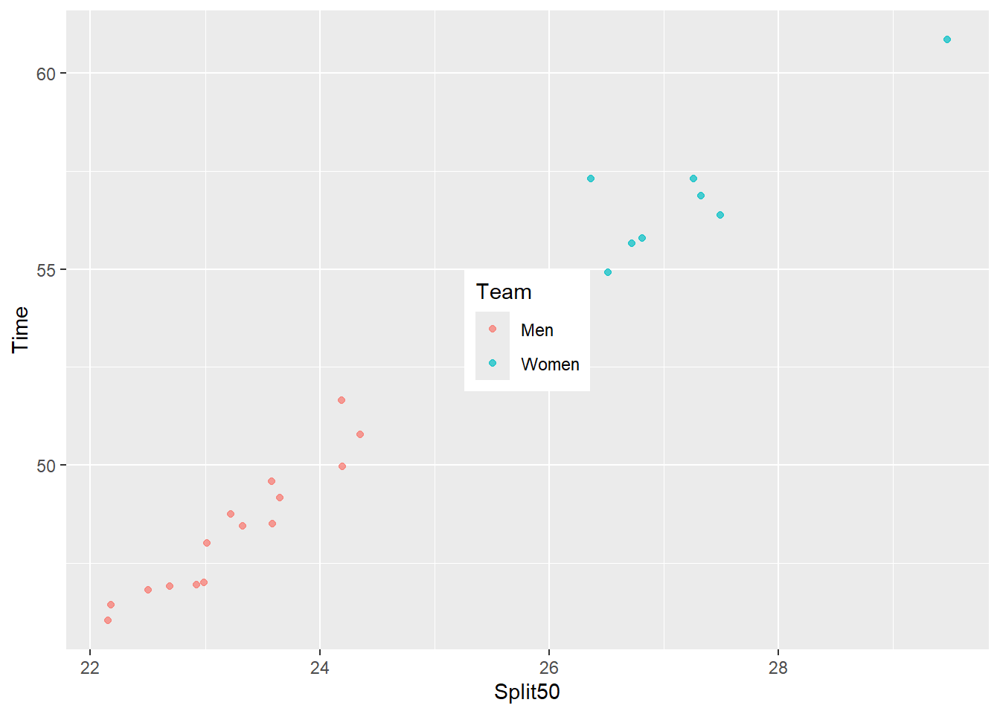
We can also place it more strategically someplace in the bottom right.
base_plot +
theme(legend.position = "inside",
legend.position.inside = c(.8, .2))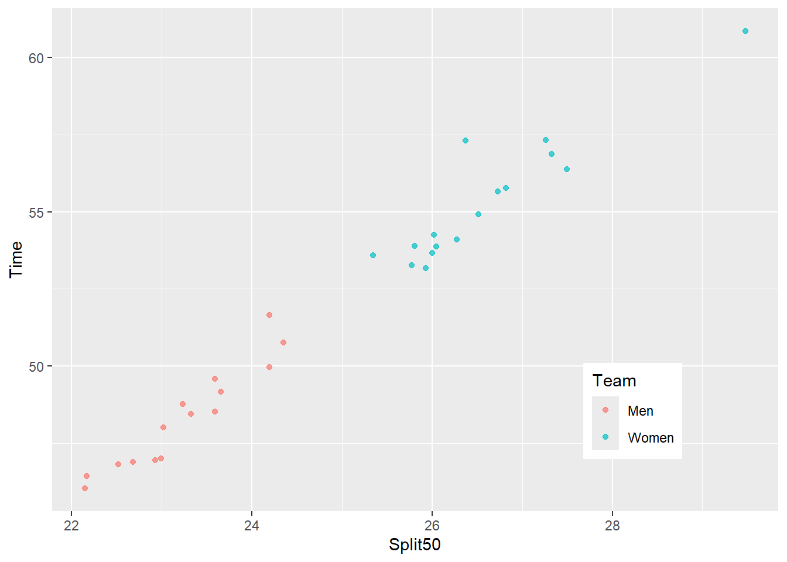
Note: Depending on the plot dimensions and the uniformity of the x and y axis scales, you may need to experiment a bit.
Legend Keys and Labels
Adjusting Legend Label Position
The text labels corresponding to the aesthetics can be rearranged by setting label.position to "right", "left", "top", "bottom" (e.g., guide_legend(label.position = "top")). You can also remove the labels using guides(color = guide_legend(label = FALSE)) although a color or shape seen in a plot without a corresponding label would be confusing.
Removing a Legend Labels
guides(<aesthetic> = guide_legend(label = FALSE))
base_plot_2 +
guides(color = guide_legend(label = FALSE))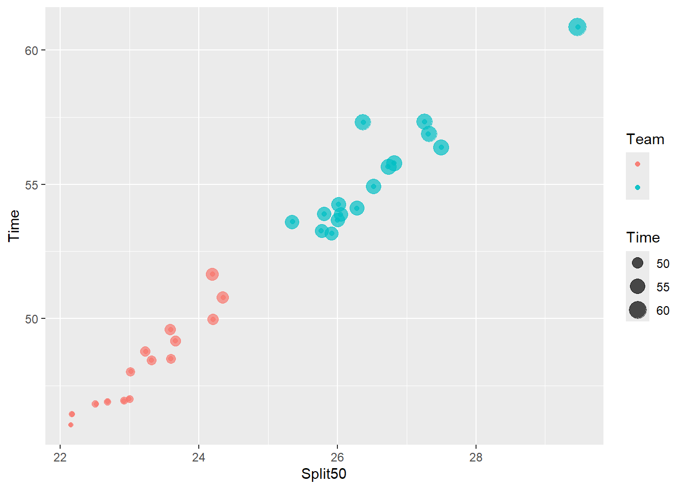
But what do the colors represent?
Changing Legend Label Position
suppressWarnings(
plot(gridExtra::arrangeGrob(
base_plot_2 +
guides(color = guide_legend(label.position = "right")) + # default
labs(title = 'label.position = "right"', tag = "A"),
base_plot_2 +
guides(color = guide_legend(label.position = "left")) +
labs(title = 'label.position = "left"', tag = "B"),
base_plot_2 +
guides(color = guide_legend(label.position = "top")) +
labs(title = 'label.position = "top"', tag = "C"),
base_plot_2 +
guides(color = guide_legend(label.position = "bottom")) +
labs(title = 'label.position = "bottom"', tag = "D"),
ncol = 2
))
) 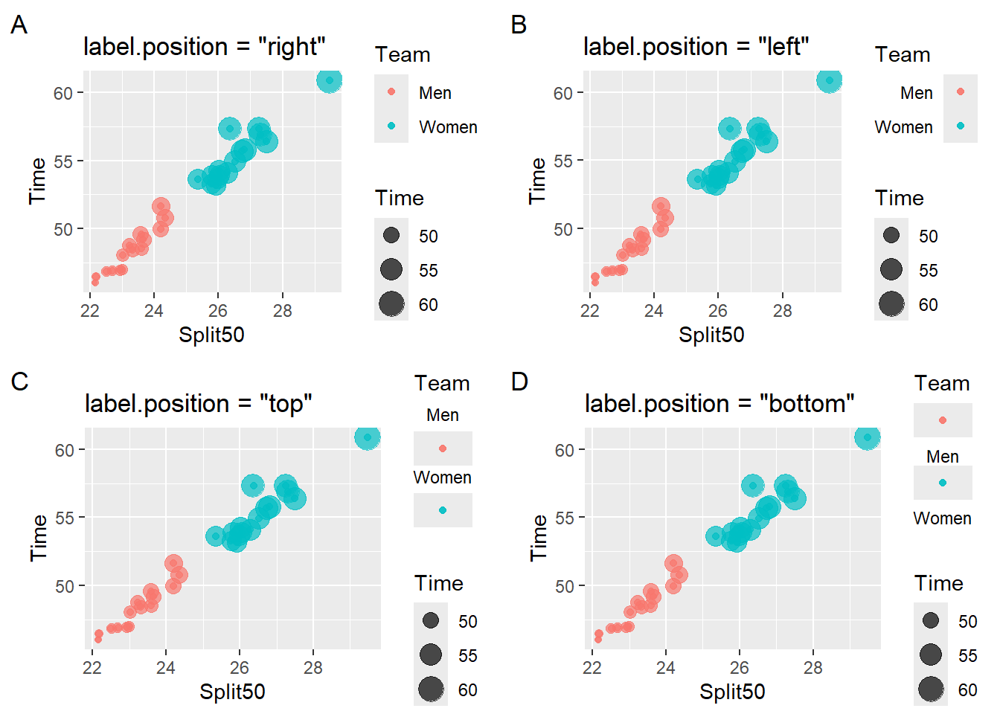
Changing the Labels Direction/Orientation
Legend labels are often presented vertically when legends are placed to the right or left of the plot and presented horizontally when oriented to the top or bottom of the plot. You may with to change this detail.
Adjusting generally using theme()
theme(legend.direction = "") will adjust all legends to be "horizontal" or "vertical" (default).
base_plot_2 +
theme(legend.direction = "vertical")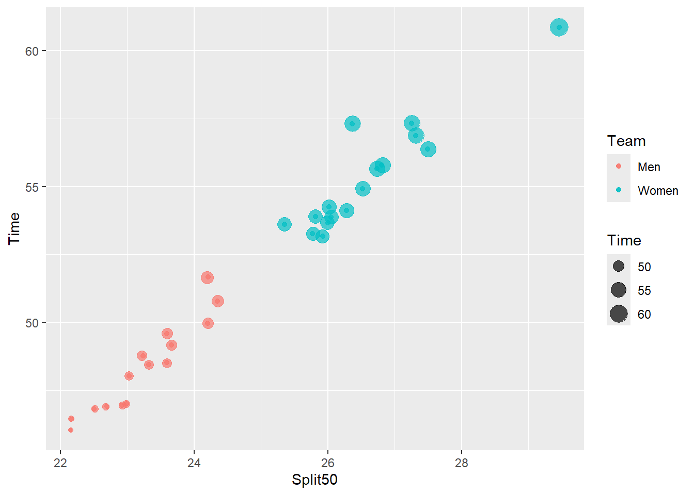
base_plot_2 +
theme(legend.direction = "horizontal")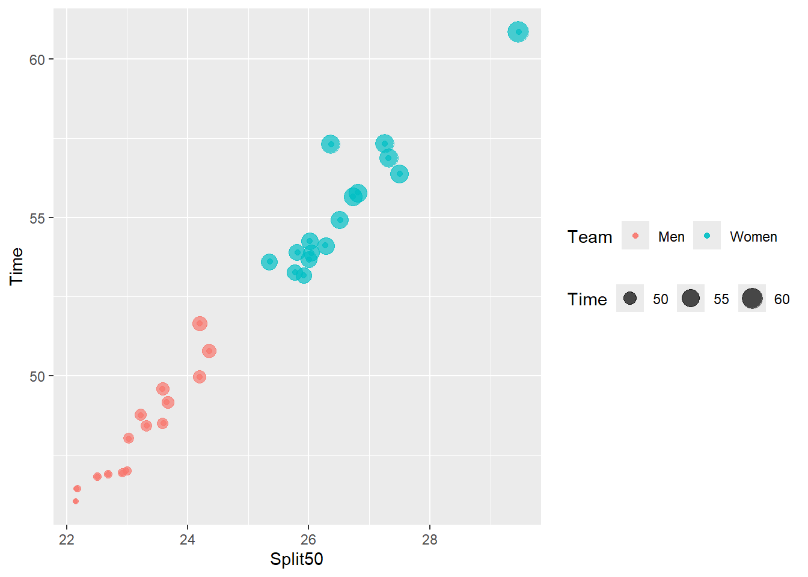
Adjusting specifically using guides() and `guide_legend()
guides(<aesthetic> = guide_legend(direction = ""))
base_plot_2 +
guides(color = guide_legend(direction = "vertical"),
size = guide_legend(direction = "horizontal")
)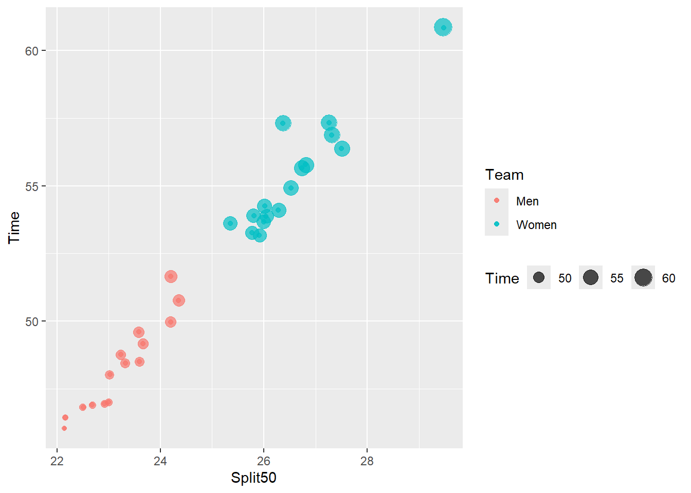
base_plot_2 +
guides(color = guide_legend(direction = "horizontal"),
size = guide_legend(direction = "horizontal")
)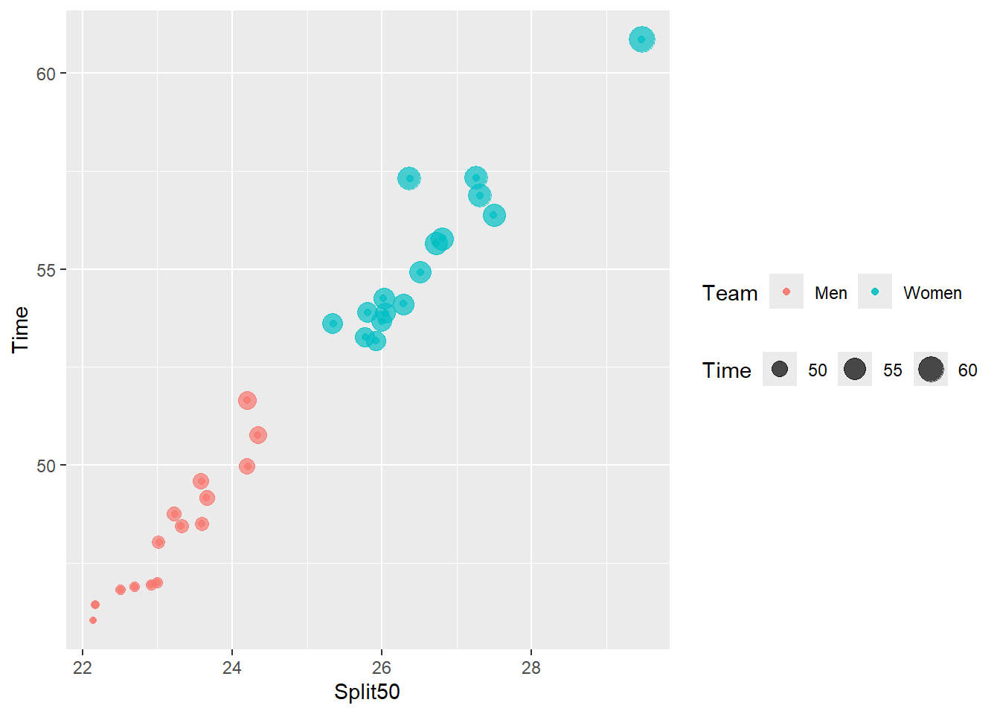
Adjusting the orientation and the location with theme() and guides():
base_plot_2 +
theme(legend.direction = "horizontal",
legend.position = "bottom"
)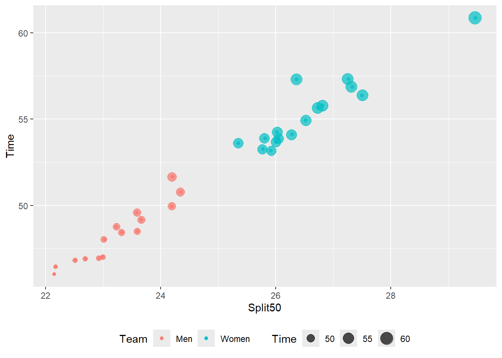
base_plot_2 +
guides(color = guide_legend(direction = "horizontal"),
size = guide_legend(direction = "horizontal")
) +
theme(legend.position = "top")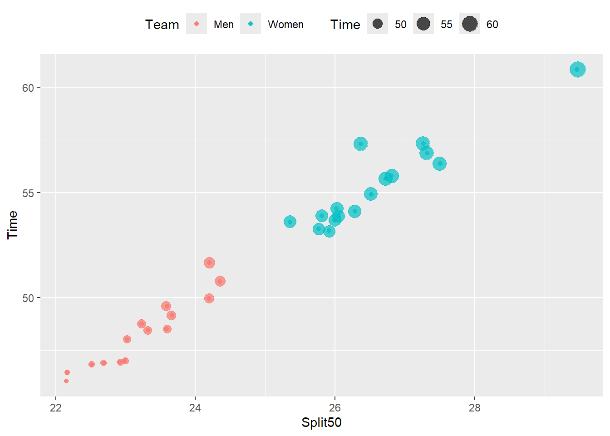
Finer Tuning of Legends
You can change other characteristics of legends using the theme() function as shown below. There our additional characteristics that you can change with other functions.
theme(
legend.background,
legend.margin,
legend.spacing,
legend.spacing.x,
legend.spacing.y,
legend.key,
legend.key.size,
legend.key.height,
legend.key.width,
legend.text,
legend.text.align,
legend.title,
legend.title.align,
legend.position,
legend.position.inside,
legend.direction,
legend.justification,
legend.box,
legend.box.just,
legend.box.margin,
legend.box.background,
legend.box.spacing,
panel.background
)Changing Legend Point Size using guides()
As you have seed, when you add aesthetics to plots, the plot will contain a legend providing a reference key for that aesthetic. You may have noticed that the shapes in the legend can often appear quite small and are often difficult to process. We have addressed how to change point size in geom_point() by either setting or mapping a variable in the data frame to the size aesthetic. A cognitive limitation associated with small-sized shapes is placed on the user because those smaller shapes demand more effect to perceive and interpret. When the user needs to distinguish between the colors of small shapes, the smaller the shapes are, the more difficult that cognitive becomes. Moreover, distinguishing between two smaller shapes is more difficult than distinguishing between larger shapes. When a variable is mapped to size, however, some of the points become larger in size, making them more easy to process but there may be times you would just like to make the shapes a little more prominent in the legend.
The guides() function is describes in the docs as “Guides for each scale can be set scale-by-scale with the guide argument, or en masse with guides().”
Comparing Legend Point Size in Plots
Let’s create some data visualizations in order to investigate the legend properties. One plot will reflect the default behavior of geom_point() adding a legend to a plot corresponding to the mapping a variable to the color aesthetic using color = Team. Another plot will map color = Team but also set size = 4. A final plot will map color = Team and map size = Team so the size will be determined by the geom.
plot1 <-
SWIM |>
filter(Team != "Mixed",
Time < 500
) |>
ggplot(mapping = aes(x = Time, y = Split50)) +
geom_point(mapping = aes(color = Team)) +
labs(title = "default",
tag = "A"
)
plot2 <-
SWIM |>
filter(Team != "Mixed",
Time < 500
) |>
ggplot(mapping = aes(x = Time, y = Split50)) +
geom_point(size = 4, aes(color = Team)) +
labs(title = "size = 4",
tag = "B"
)
plot3 <-
SWIM |>
filter(Team != "Mixed",
Time < 500
) |>
ggplot(mapping = aes(x = Time, y = Split50)) +
geom_point(mapping = aes(size = Team, color = Team)) +
# note the warning: Using size for a discrete variable is not advised.
labs(title = "aes(size = Team)",
tag = "C"
)
suppressMessages(
plot(
gridExtra::arrangeGrob(plot1, plot2, plot3, ncol = 1)
)
)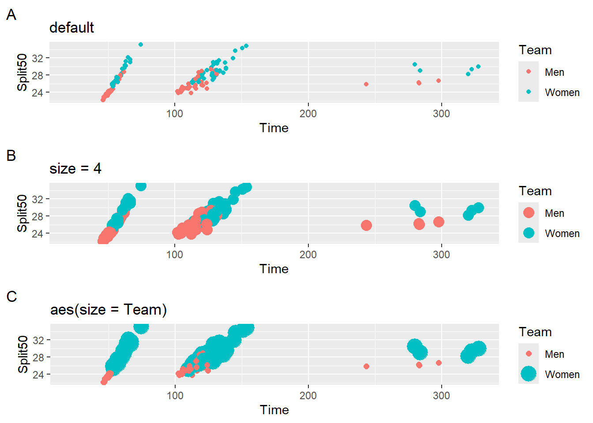
All three plots contain legends but they differ in the rendering of point size. Plot A has the smallest circles and Plot C has variation in circle size because both color and size are mapped to the variable. Importantly, the point size in the legend and in the plot are the same and this characteristic is important mapping a variable to size. Mismatching point sizes between the plot and the legend would certainly be confusing. When size is a constant, however, changing their size in the legend can ease the processing demand. The point size on the legend may result in difficulty with seeing the color, even for those which normal color vision. You don’t want your audience to squint when you are given your talk or stare at the legend in an attempt to understand the color differences.
Adjusting Keys in Legends
For various reasons, you may need to adjust the orientation, size, color, or some aesthetic property of legend keys in order to make plots more user friendly. We will work through some examples of these modifications using guide_legend() for a given aesthetic.
Reversing the Legend Keys
If your legend order can be reversed to solve a perceptual inconsistency, just reverse them. Reversing the order may be a solution to some problems and works easily when there are only two groups but such a simple fix may not work when there are three or more groups to label.
guides(<aesthetic> = guide_legend(reverse = TRUE))`suppressMessages(
plot(
gridExtra::arrangeGrob(
plot1,
plot1 +
labs(title = 'guides(color = guide_legend(reverse = TRUE))') +
guides(color = guide_legend(reverse = TRUE)), ncol = 1)
)
)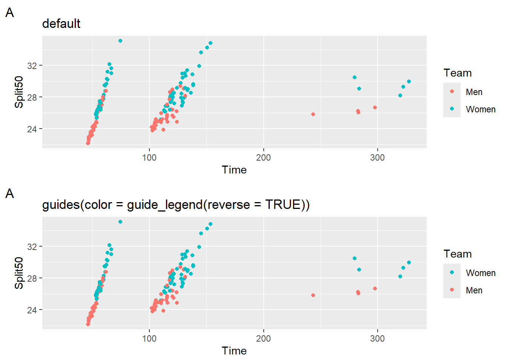
Overriding Key size in Legends
In most cases, you simply want to make the legend colors more visible for your users. Either you want to increase the size of points that are potentially too small or decrease the size of points that are just too large. Remember that aesthetic properties are inherited from data. Legend properties are inherited from the aesthetic mappings of their geoms. The legend properties may, however, benefit from modifications. When you want to change the legend properties manually, you can use the guide() function and specify arguments with helper functions guide_legend().
We will use guides() along with guide_legend() in order to override aesthetics. The general behavior will be to add a layer to a plot object like that shown below.
Note: The goal of these examples is to illustrate how to change the key characteristics, not how to make everything match.
guides(
<aesthetic> = guide_legend(
override.aes = list(
<same or other aesthetic> = numeric or string value
)
)
)Dealing with a Constant Key Size
When the legend provide a key that corresponds to an aesthetic other than size, changing the size of them does not compromise the plot integrity. We will take a single plot and adjust the size in four ways. Some points will be smaller than the default and some larger.
We will use guides() along with guide_legend() in order to override the size aesthetic using override.aes = list(size = numeric value). Please note that point size is visibly present in default plots but not controlled by any coding. Importantly, remember that all aesthetics that you see in the plot (and some you don’t see because they are invisible) are controlled in some manner, whether by you the creator or by the developers of {ggplot2}. In the default case, size is controlled but by the developers default choices.
guides(color = guide_legend(override.aes = list(size = numeric value)))suppressWarnings(
plot(
gridExtra::arrangeGrob(plot1 +
labs(title = 'guide_legend(override.aes = list(size = 1))',
tag = "A") +
guides(color = guide_legend(override.aes = list(size = 1))),
plot1 +
labs(title = 'guide_legend(override.aes = list(size = 2))',
tag = "B") +
guides(color = guide_legend(override.aes = list(size = 2))),
plot1 +
labs(title = 'guide_legend(override.aes = list(size = 3))',
tag = "C") +
guides(color = guide_legend(override.aes = list(size = 3))),
plot1 +
labs(title = 'guide_legend(override.aes = list(size = 6))',
tag = "A") +
guides(color = guide_legend(override.aes = list(size = 6))), ncol = 2)
)
)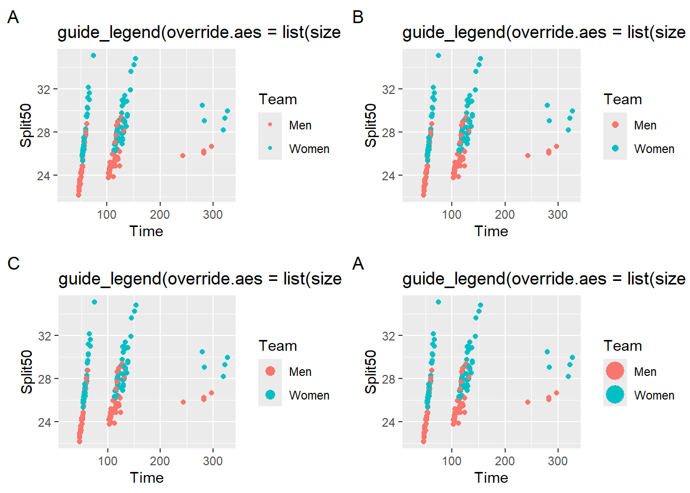
Which override do you like best? Which is most helpful for your client? Which legend strikes the best balance between the point points and the legend points?
Of course, you really might wish to do something like reverse the legend labels as well by adding arguments.
plot1 +
guides(color = guide_legend(override.aes = list(size = 3),
reverse = TRUE)
) +
labs(title = NULL, tag = "")Warning: Removed 14 rows containing missing values or values outside the scale range
(`geom_point()`).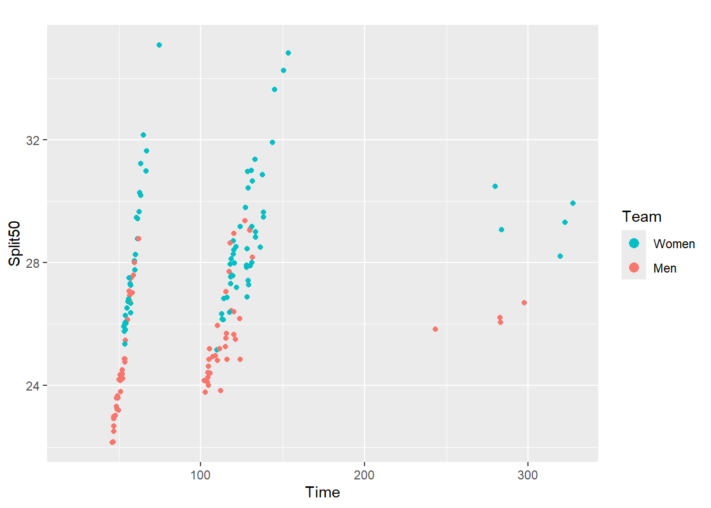
Dealing with a Variable Key Size
If you do not like the size of the points and you are unsure what numeric value is associated with a shape, you can always control this yourself by adding a variable to the data frame and setting the scale_size_manual(). This way, you can adjust the legend size and ensure that the sizes in the legend correspond to the size in plot just as the default behavior works for a legend.
Here we will mutate() a new variable using case_when() that specifies a numeric value to serve as the size of points for each Team. We will then override the size of the legend keys corresponding to the color aesthetic by passing a two-element vector containing the same values. In the event that we want to reuse these sizes (and prevent some errors), we will assign the values to a named vector that we will use in both places in the plot code.
legend_point_size <- c("Men" = 3, "Women" = 4.5)
SWIM |>
filter(Team != "Mixed",
Time < 500
) |>
mutate(TeamSize = case_when(
Team == "Men" ~ legend_point_size[1],
Team == "Women" ~ legend_point_size[2],
)) |>
ggplot(mapping = aes(x = Time, y = Split50)) +
geom_point(mapping = aes(color = Team, size = TeamSize)) +
labs(title = "default",
tag = " --- "
) +
scale_size_identity() +
guides(color = guide_legend(override.aes = list(size = legend_point_size)))Warning: Removed 14 rows containing missing values or values outside the scale range
(`geom_point()`).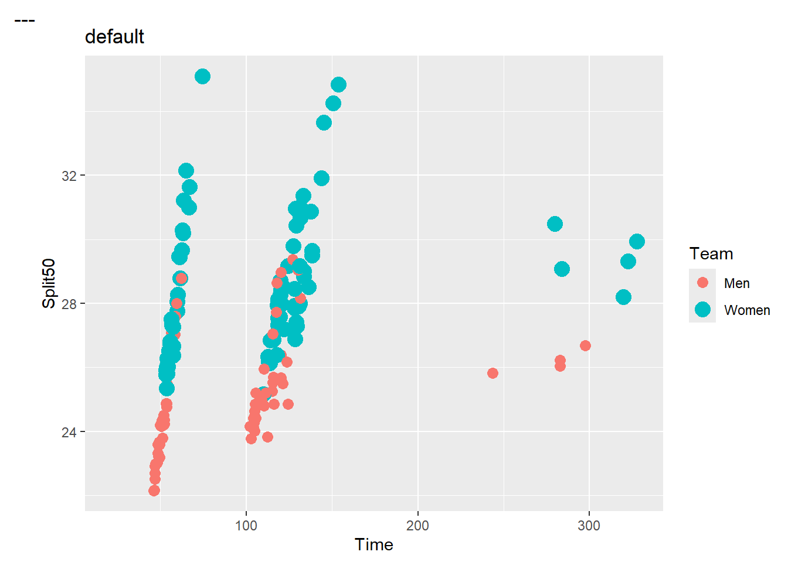
You could achieve the same plot by setting numeric values specifically as with the following:
guides(color = guide_legend(override.aes = list(size = c(3, 4.5))))Overriding other aesthetics of Legend Keys
Examples:
Change the shape, size, color, and alpha of the color aesthetic. Because there are two labels for the color aesthetic, we need to pass one value for a constant applied to all or a two-element vector if you wish for them to vary.
base_plot_3 +
guides(color = guide_legend(override.aes = list(shape = 15,
size = 4,
color = c("firebrick", "goldenrod"),
alpha = .3
))
)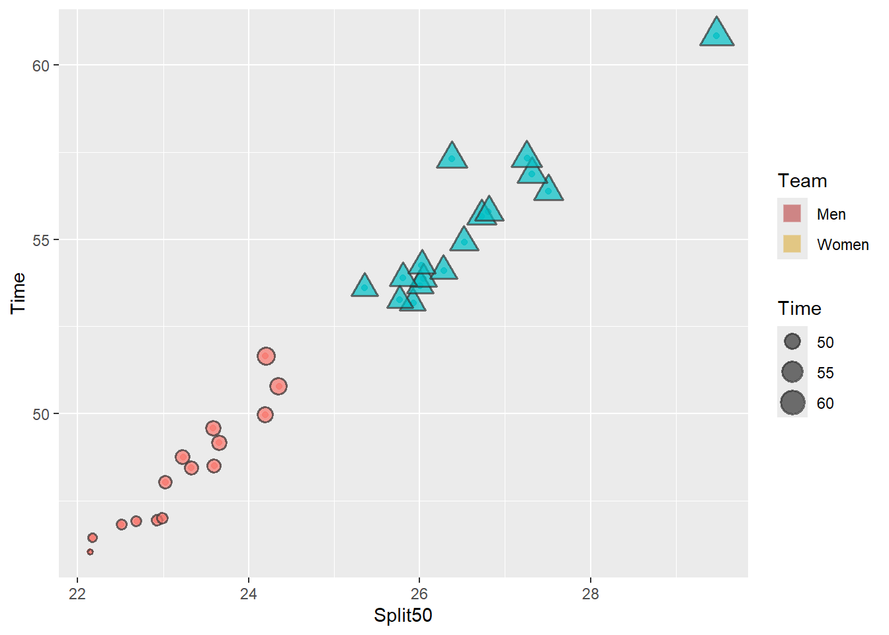
Change the shape, size, color, fill, alpha, and stroke of the size aesthetic:
Because there are three labels for the size aesthetic, we need to pass three of each to vary.
base_plot_3 +
guides(size = guide_legend(override.aes = list(shape = 22,
size = c(2, 4, 6),
color = c("cornflowerblue",
"goldenrod",
"firebrick"
),
fill = "grey",
alpha = .6,
stroke = 2
))
)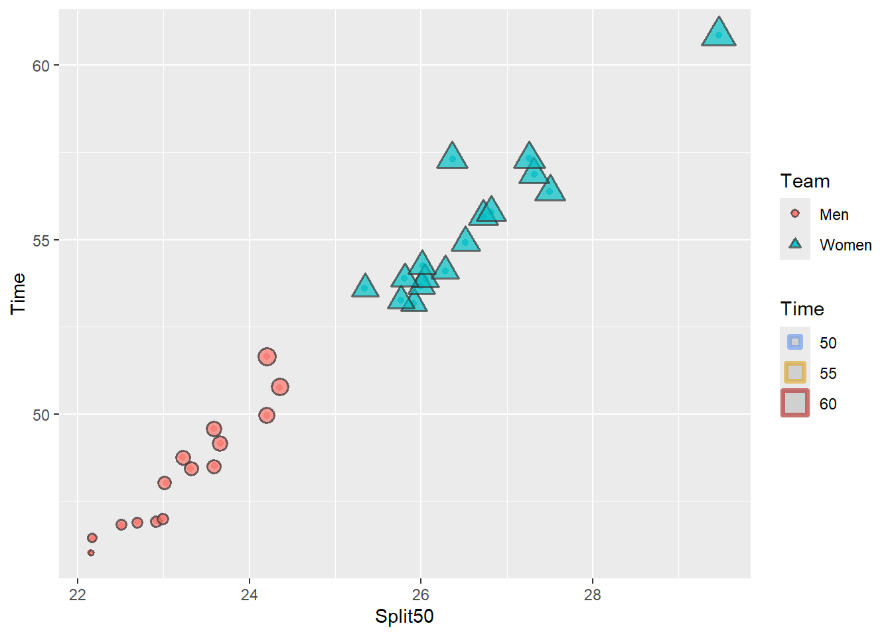
Reordering Legend Labels using scale_<aesthetic>_manual()
Let’s say our plot is mapping a single variable to two aesthetics, color and shape.
SWIM |>
filter(Time < 500) |>
ggplot(mapping = aes(x = Time, y = Split50)) +
geom_point(mapping = aes(color = Team,
shape = Team
)
) Warning: Removed 15 rows containing missing values or values outside the scale range
(`geom_point()`).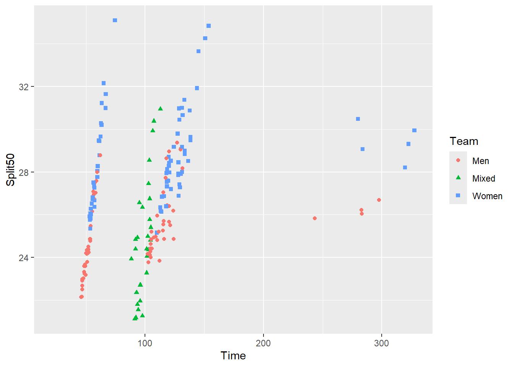
We want to order the keys and labels in the legend. This is a legend that has two parts, color and shape. There are three key-label pairs to order. In general, the blue squares appear to be higher in the plot than the red circles or green triangles. The legend should at least try to match that order.
We will need to manually adjust:
colorusingscale_color_manual()shapeusingscale_shape_manual()
Importantly, we need to know the labels names
legend_colors <- c("Women" = "blue", "Men" = "red", "Mixed" = "gray")
legend_shapes <- c("Women" = 15, "Men" = 16, "Mixed" = 17)
legend_color_size <- 3 # increase size for all
SWIM |>
filter(Time < 500) |>
ggplot(mapping = aes(x = Time, y = Split50)) +
geom_point(mapping = aes(color = Team,
shape = Team
)
) +
scale_color_manual(values = legend_colors) +
scale_shape_manual(values = legend_shapes) +
guides(color = guide_legend(override.aes = list(size = legend_color_size)))Warning: Removed 15 rows containing missing values or values outside the scale range
(`geom_point()`).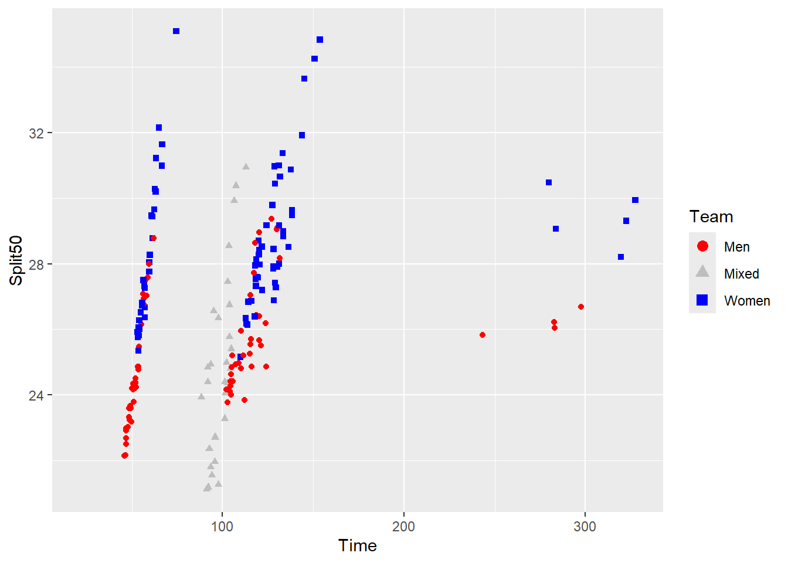
OK great, we have manually set our colors and shapes but the order is still off. The labels are not ordered in a way to facilitate perception. The named vector is not always going to work and sometimes you have to manipulation the values, breaks, and text labels independently.
We will:
- add labels and breaks to
scale_color_manual() - add labels and breaks to
scale_shape_manual()
The ordering of the elements in the label vector will control how they labels are
For example, labels = c("Women", "Men", "Mixed") will reorder the text labels in that order from top to bottom.
Let’s make a list() that contains the values two vectors, one containing the values and one containing the way to place breaks. We will do this both for the color and shape aesthetics because they are mapped to the same variable, Team.
legend_color_manual <- list(
values = c("blue", "red", "gray"),
breaks = c("Women", "Men", "Mixed")
)
legend_shape_manual <- list(
values = c(15, 16, 17),
breaks = c("Women", "Men", "Mixed")
)Add the values:
SWIM |>
filter(Time < 500) |>
ggplot(mapping = aes(x = Time, y = Split50)) +
geom_point(mapping = aes(color = Team,
shape = Team
)
) +
# adjust manually for col
scale_color_manual(values = legend_color_manual$values
) +
# adjust manually for shape
scale_shape_manual(values = legend_shape_manual$values) +
# then override the size using the object defined earlier
guides(color = guide_legend(override.aes = list(size = legend_color_size)))Warning: Removed 15 rows containing missing values or values outside the scale range
(`geom_point()`).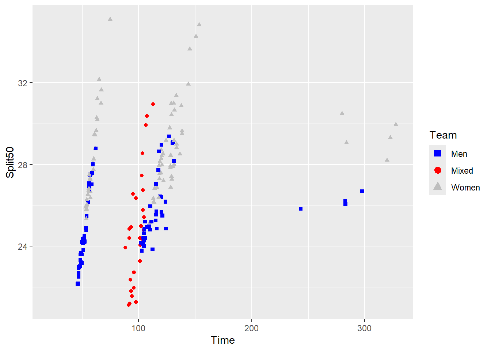
Except the result is that the colors not longer match the same ordering from the named vector legend_colors.
Adding breaks to the plot, gives us:
SWIM |>
filter(Time < 500) |>
ggplot(mapping = aes(x = Time, y = Split50)) +
geom_point(mapping = aes(color = Team,
shape = Team
)
) +
# adjust manually for col
scale_color_manual(values = legend_color_manual$values,
breaks = legend_color_manual$breaks
) +
# adjust manually for shape
scale_shape_manual(values = legend_shape_manual$values,
breaks = legend_shape_manual$breaks
) +
# then override the size using the object defined earlier
guides(color = guide_legend(override.aes = list(size = legend_color_size)))Warning: Removed 15 rows containing missing values or values outside the scale range
(`geom_point()`).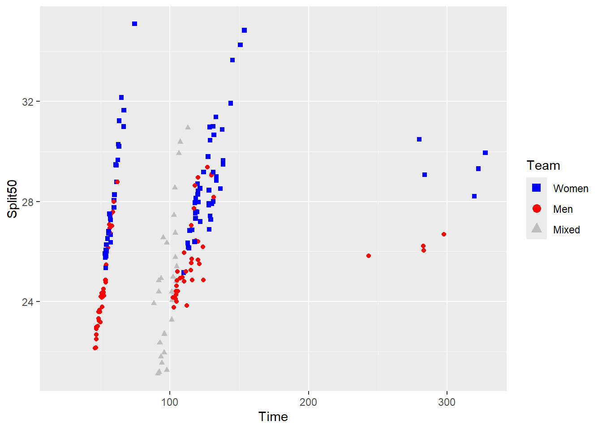
If you do not add the values, you will likely receive an error because a color palette needs to be passed to values for scale_color_manual().
Reordering Legend Labels
Legend labels are presented in an order, whether from top to bottom or from left to right. We have discussed previously that legend labels are not always presented alphabetically. The order depends on the variable type. When variables are character vectors, they will be ordered alphabetically but if they are factors, they will be ordered based on their order, which will differ based on them being factors or ordered factors. Using unique(), we can see the unique levels.
unique(SWIM$Team)[1] "Mixed" "Women" "Men" This is simply a character vector. When this type of Team variable is mapped to the aesthetic, the order of the labels in the legend do not map on to the spatial positioning of the data in the plot.
Moreover, there are no levels to Team because character vectors don’t have level. Factors have levels so when we use alllevels() to examine the variables, we will see nothing is returned.
levels(SWIM$Team)NULLVectors that are factors will contain levels, so converting the vector will return its levels.
levels(factor(SWIM$Team))[1] "Men" "Mixed" "Women"The levels returned make the order parent: "Men", "Mixed", and "Women". When displayed in the legend, they will take on this order from top to bottom for the default legend orientation (e.g., "right"). This order will not address the the mismatch of the labels in the data. Including all three levels of the Team variable will make this mismatch more apparent. Such an arrangement will make cognitive processing of the visualization more challenging.
Here is plot with three levels.
Reordering Factor Levels using {forcats}
There are two types of reordering that support plot interpretation. First, reordering of the data such that bars, box plots, etc. corresponing to a non-sequential factor are arranged from highest to lowest or lowest to highest from left to right or top to bottom. The exception is when your grouping variable is sequential, like dates or ranks. Second, reordering legend keys to follow that arrangment of the data. When legend order and data are inconsistent, you place a greater demand on the user to make sense of and remember the data. If you include a legend, you want your legend to communicate the same information as the data communicate.
Using reorder()
Sometimes, this can be handled with reorder() directly in aesthetic mapping. For example, rather than map x = Event, you can use reorder() to map a reordering of Events according to the y variable (or some other variable).
reorder(x = <the vector for reordering>,
FUN = <the function for reordering, defaults to mean>,
X = <the vector on which to base reordering>,
decreasing = <TRUE or FALSE, defaults to FALSE>
)For example, reorder(x = Event, X = Time) will reorder Event by Time based on the mean Time for each Event.
SWIM |>
filter(Distance == 200) |>
ggplot(mapping = aes(x = reorder(x = Event,
FUN = mean,
X = Time),
y = Time
)
) +
stat_summary(fun = mean, geom = "bar")
To reorder from higheest to lowest, change decreading = TRUE:
SWIM |>
filter(Distance == 200) |>
ggplot(mapping = aes(x = reorder(x = Event,
FUN = mean,
X = Time,
decreasing = TRUE),
y = Time
)
) +
stat_summary(fun = mean, geom = "bar")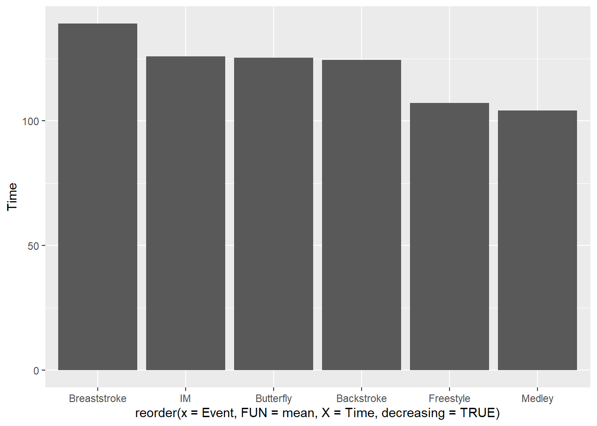
There is no need to introduce a function like desc() to reorder(). Just use the parameters available.
To reorder by the ascending standard deviations, change FUN = sd:
SWIM |>
filter(Distance == 200) |>
ggplot(mapping = aes(x = reorder(x = Event,
FUN = mean,
X = Time),
y = Time
)
) +
stat_summary(fun = mean, geom = "bar")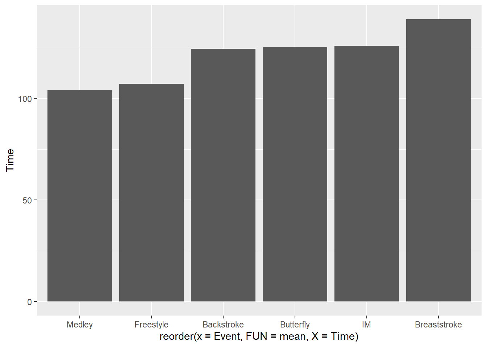
When both x and y variables are numeric as we see in this scatterplot, you need to reorder the variable mapped to the aestheic creating the legend.
SWIM |>
filter(Distance == 200) |>
ggplot(mapping = aes(x = Split50,
y = Time,
color = reorder(x = Team, X = Time)
)
) +
geom_point()Warning: Removed 1 row containing missing values or values outside the scale range
(`geom_point()`).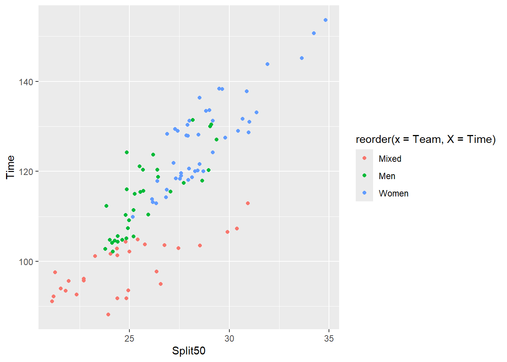
As you see clearly in this plot and with the previous, the labels for the axes and the legend take on the reordering names when inside {ggplot2} functions. Although legend titles can be fixed, changing the data frame is just easier. The reorder() can be applied to the data frame using mutate().
SWIM |>
filter(Distance == 200) |>
mutate(Team = reorder(x = Team,
X = Time)) |>
ggplot(mapping = aes(x = Split50,
y = Time,
color = Team
)
) +
geom_point()Warning: Removed 1 row containing missing values or values outside the scale range
(`geom_point()`).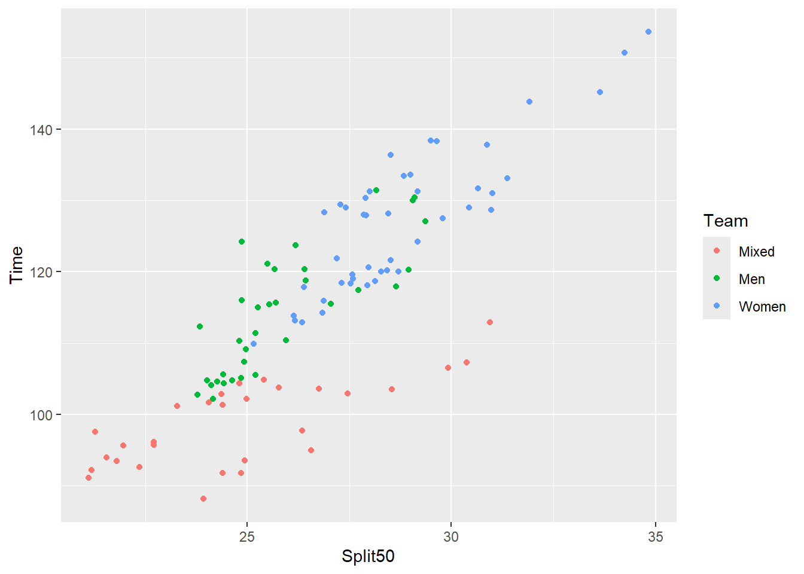
The problem now is that the legend does not match the information communicated in the data across the grouping variable, Event. We need to set decreasing = TRUE
SWIM |>
filter(Distance == 200) |>
mutate(Team = reorder(x = Team,
X = Time,
decreasing = TRUE)) |>
ggplot(mapping = aes(x = Split50,
y = Time,
color = Team
)
) +
geom_point()Warning: Removed 1 row containing missing values or values outside the scale range
(`geom_point()`).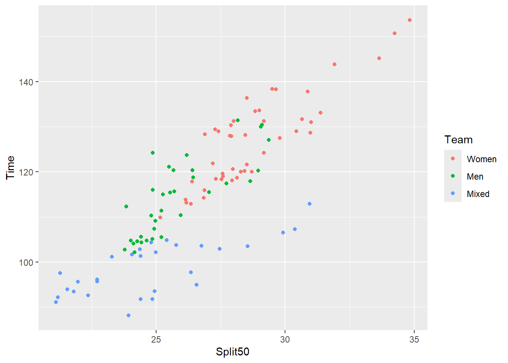
Using forcats::fct_reorder()
As stated, the easiest ways to ensure that the order to the legend labels matches that of the data presented in the plot when you are dealing with a categorical variable is to convert the vector to a factor and reorder it based on the data. Although reorder() works, a more flexible function that is worth understanding the forcats::fct_reorder() and forcats::fct_reorder2(). These sister functions provide better factor management as well as finer tuning of ordering. Rather than invest time understanding different functions, understanding {forcats} functions is just better long term. This is is why {forcats} is part of the {tidyvers} ecosystem of libraries.
The {forcats} library makes this task easy using two functions, using fct_reorder() and fct_reorder2(). The two functions will reorder a factor’s levels by sorting them based on another variable. The main difference between the two functions is that fct_reorder() will reorder based on a single dimension and is thus best for 1-dimensional displays whereas fct_reorder2() will reorder based on two dimensions and is best for 2-dimensional displays where the factor is mapped to a non-position aesthetic.
In order to see how the factor levels may be arranged based on the numeric variables for the scatter plot, we can use group_by() and summarize() the median, which is the default behavior of fct_reorder().
SWIM |>
filter(Event == "Freestyle") |>
filter(Time >= 75 & Time <= 150) |>
group_by(Team) |>
summarize(Time = median(Time)) |>
ungroup() |>
arrange(Time)# A tibble: 3 × 2
Team Time
<chr> <dbl>
1 Mixed 93.5
2 Men 105.
3 Women 119. The means from fastest to slowest are "Mixed", "Men", and "Women".
SWIM |>
filter(Event == "Freestyle") |>
filter(Time >= 75 & Time <= 150) |>
group_by(Team) |>
summarize(Split50 = median(Split50)) |>
ungroup() |>
arrange(Split50)# A tibble: 3 × 2
Team Split50
<chr> <dbl>
1 Mixed 22.7
2 Men 24.5
3 Women 27.6The means for the split time at 50 m from fastest to slowest is again "Mixed", "Men", and "Women". We need to ensure that our plot legend is from top to bottom "Women", "Men", and "Mixed" or from left to right "Mixed", "Men", and "Women".
Comparing Plots with fct_reorder() and fct_reorder2()
You can reorder the vector in the data frame before passing to ggplot() or within the aes() mapping in the object. However, if you have multiple variable-aesthetic mappings to that variable, your more efficient approach will be to change in the data frame.
Some key features of both functions:
.f: the factor .x: the variable for reordering with fct_reorder() .x and .y: the variable(s) for reordering with fct_reorder2()
Using forcats::fct_reorder():
Adjust the grouping of Team by Split50.
SWIM |>
filter(Event == "Freestyle") |>
filter(Time >= 75 & Time <= 150) |>
mutate(Team = forcats::fct_reorder(.f = Team,
.x = Split50
)
) |>
pull(Team) [1] Women Women Women Women Women Women Women Women Women Women Women Women
[13] Women Women Women Women Women Women Women Women Men Men Men Men
[25] Men Men Men Men Men Men Men Men Men Men Mixed Mixed
[37] Mixed Mixed Mixed Mixed Mixed Mixed Mixed Mixed Mixed Mixed Mixed Mixed
[49] Mixed
Levels: Mixed Men WomenNotice this order is "Mixed", "Men", and then "Women".
Using forcats::fct_reorder2():
Adjust the grouping of Team by Time and Split50.
SWIM |>
filter(Event == "Freestyle") |>
filter(Time >= 75 & Time <= 150) |>
mutate(Team = forcats::fct_reorder2(.f = Team,
.x = Time,
.y = Split50
)
) |>
pull(Team) [1] Women Women Women Women Women Women Women Women Women Women Women Women
[13] Women Women Women Women Women Women Women Women Men Men Men Men
[25] Men Men Men Men Men Men Men Men Men Men Mixed Mixed
[37] Mixed Mixed Mixed Mixed Mixed Mixed Mixed Mixed Mixed Mixed Mixed Mixed
[49] Mixed
Levels: Women Men MixedNotice this order is "Women", "Men", and then "Mixed". This ordering may appear odd because the mixed group is faster than men but this is outcome results from the fact that the Distance variable that is not accounted for in the data filtering. For illustration purposes, with our plot we don’t care about that. Nevertheless, the horizontal order would be good if the legend was positioned along the top/bottom. The vertical order is problematic unless we reverse it.
Plotting and Comparing Reordering using fct_reorder() and fct_reorder2()
We will specify .f = Team and .x as Split50 and when used, .y = Time.
Plotting with a Reordering by forcats::fct_reorder2():
SWIM |>
filter(Event == "Freestyle") |>
filter(Time >= 75 & Time <= 150) |>
mutate(Team = forcats::fct_reorder2(.f = Team,
.x = Split50,
.y = Time
)) |>
ggplot(mapping = aes(x = Split50,
y = Time,
)
) +
geom_point(mapping = aes(size = Time,
shape = Team,
fill = Team,
color = Team
),
position = position_jitter(),
alpha = .7,
color = "grey20",
stroke = 1
) +
scale_shape_manual(values = c(21, 22, 24)) +
guides(size = "none")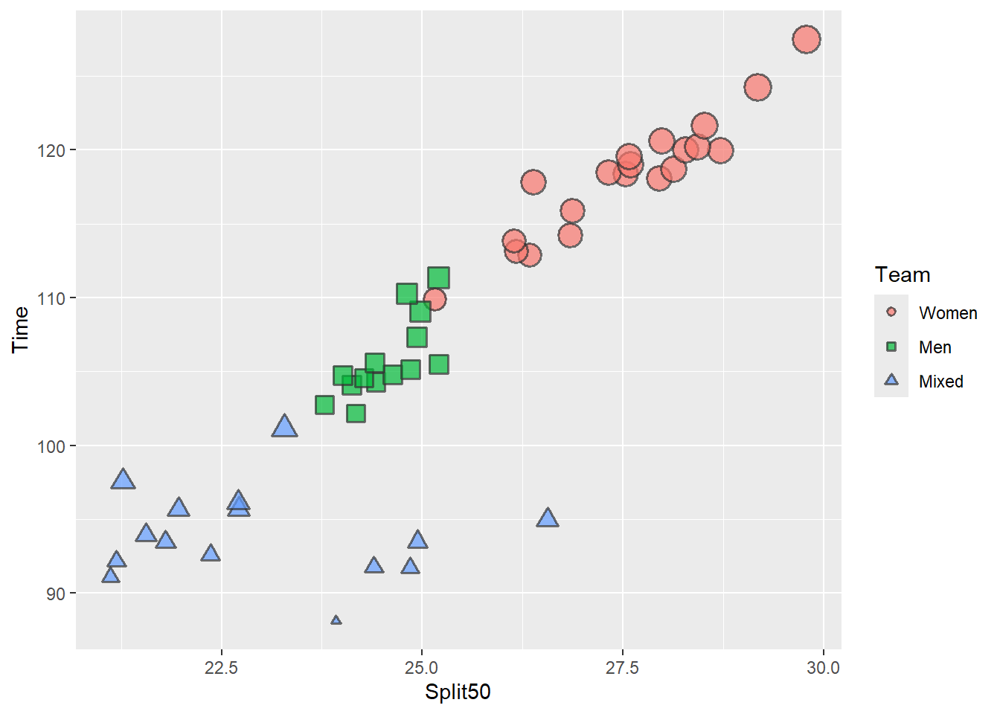
When the legend is positioned to the right of the plot, the vertical positioning of the legend labels now matches the data.
To position the legend at the bottom of the plot, we get:
SWIM |>
filter(Event == "Freestyle") |>
filter(Time >= 75 & Time <= 150) |>
mutate(Team = forcats::fct_reorder2(.f = Team,
.x = Split50,
.y = Time
)) |>
ggplot(mapping = aes(x = Split50,
y = Time,
)
) +
geom_point(mapping = aes(size = Time,
shape = Team,
fill = Team,
color = Team
),
position = position_jitter(),
alpha = .7,
color = "grey20",
stroke = 1
) +
scale_shape_manual(values = c(21, 22, 24)) +
guides(size = "none") +
theme(legend.position = "bottom")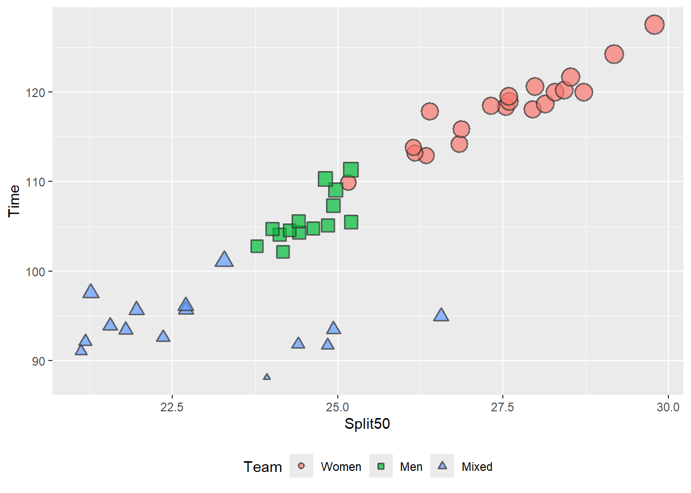
When the legend is positioned at the bottom, the horizontal positioning of the legend labels does not match the data. You can also change the .x and .y variables if necessary.
Plotting with a Reordering by forcats::fct_reorder():
fct_reorder() will reorder Team only by a single variable. You could choose either Split50 or Time.
Bar plots
When you have a bar plot, reordering the factor will help arrange the data from lowest to highest, thus making the data more easy to perceive. When dealing with variables plotting a continuous and a discrete variable, use fct_reorder().
SWIM |>
filter(Event == "Freestyle") |>
filter(Time >= 75 & Time <= 150) |>
mutate(Team = forcats::fct_reorder(.f = Team, .x = Time)) |>
ggplot(mapping = aes(x = Team,
y = Time,
)
) +
geom_boxplot(mapping = aes(fill = Team))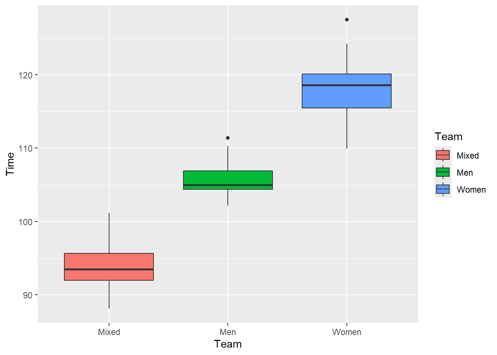
Although we have ordered the box plots, the legend is not in an order that matches the vertical ordering. If you want the legend labels oriented vertically, consider adjusting them using labels and breaks settings with scale_*_manual() functions. However, moving the legend to the bottom, top, or changing the direction to horizontal would suffice. You can also consider direct labeling of the plot.
SWIM |>
filter(Event == "Freestyle") |>
filter(Time >= 75 & Time <= 150) |>
mutate(Team = forcats::fct_reorder(.f = Team, .x = Time)) |>
ggplot(mapping = aes(x = Team,
y = Time,
)
) +
geom_boxplot(mapping = aes(fill = Team)) +
theme(legend.position = "bottom")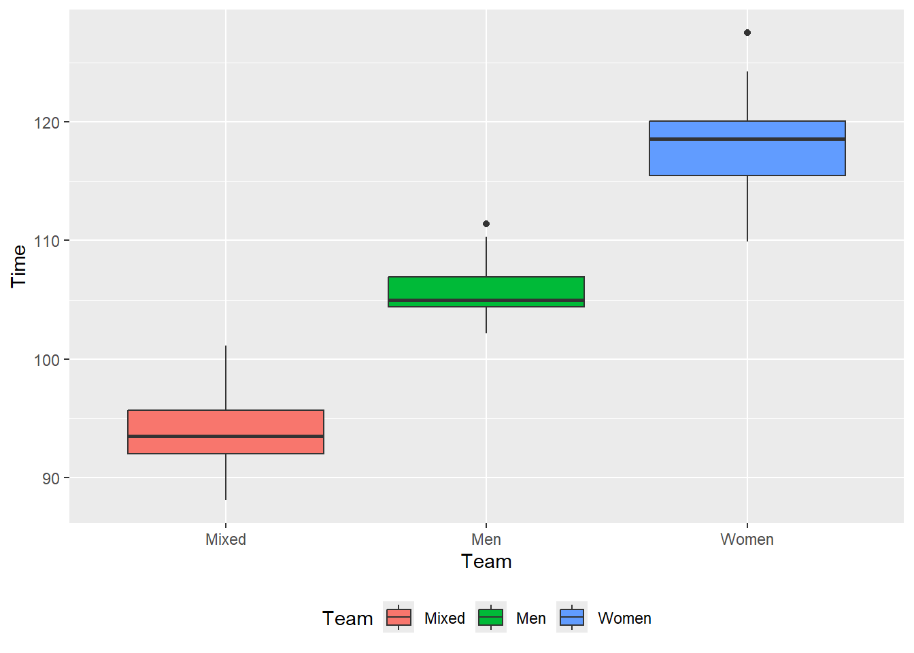
Reordering the Labels in a Legend
This topics relates to creating perceptually-efficient data visualizations nevertheless we will address this topic. The legend information is supposed to support the data presented in a plot. Sometimes, however, the ordering of the labels in the legend compromises perceptual processing by the user.
Let’s take another look at a plot. We will remove the size legend just to reduce confusion. Remember we can do this using guides(<aesthetic> = "none").
base_plot_3 +
guides(size = "none")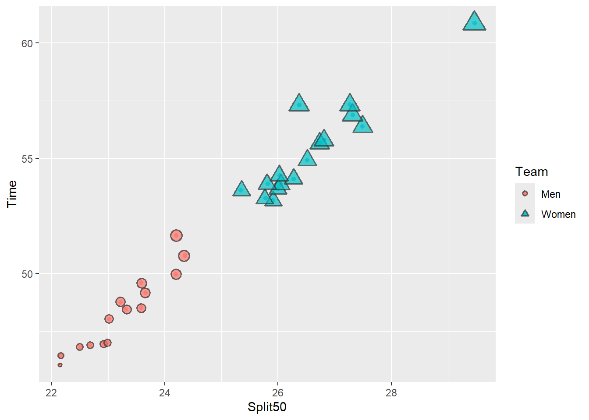
In this plot, the legend label order is opposite that of the data. Men are faster than Women so processing the fill and the shape aesthetics but the legend is arranged in the reversed order. There is no utility in ordering the labels in a way that increases the cognitive demand on the user. Not paying attention to such issues may result in your plots being less effective than is necessary. Although there are often desirable difficulties associated with increased cognitive effort, the trade off here is a misinterpretation of the plot.
What can we do? Well, we already discussed changing the legend position by modifying legend.position. We can move the legend to the bottom (below the plot). By doing so, the left-right arrangement matches the location of the data along the x axis.
base_plot_3 +
guides(size = "none") +
theme(legend.position = "bottom") 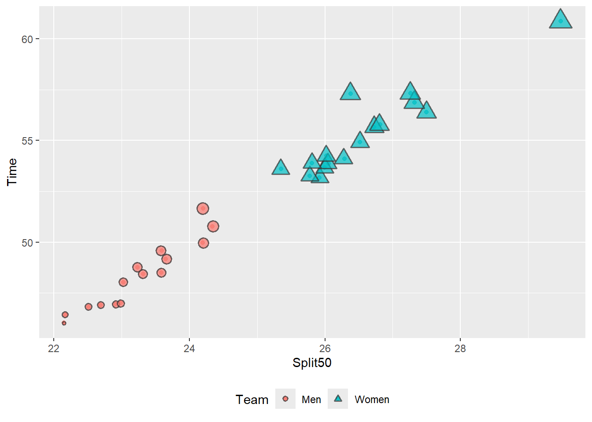
But let’s say either we do not want to position a legend along the top or bottom or that doing so does not solve the problem. The more levels and labels there are, the more difficult this will be do achieve. We will need to rearrange the labels themselves.
base_plot_3 +
guides(size = "none") +
theme(legend.position = "right") Changing Legend Title Characteristics
If your mapped variable is messy, you will need to make it look pretty. Perhaps it contains an underscore (e.g., _), is all lowercase, or is CamelCase, etc. If you cannot handle this using {dplyr} before piping to your plot, you can change the title. Because the legend corresponds to aesthetics added to the plot beyond the x and y variables, we need to specify them individually. This means that you have control over each legend.
Changing the title for each legend is easy using guide_legend(title = ""). Just remember that if a variable is mapped to multiple aesthetics, you will need to change the title in both places or the grouped legend will be split into its parts.
Example:
guides(
color = guide_legend()
shape = guide_legend()
size = guide_legend()
)Changing Legend Title guides()
suppressMessages(
plot(
gridExtra::arrangeGrob(base_plot_3 +
labs(title = 'default'),
# fill only
base_plot_3 +
guides(fill = guide_legend(title = "Teams")) +
labs(title = 'change fill only'),
# fill, shape, col
base_plot_3 +
guides(fill = guide_legend(title = "Teams"),
shape = guide_legend(title = "Teams"),
color = guide_legend(title = "Teams"),
) +
labs(title = 'change col, fill, and shape'),
ncol = 1
))
)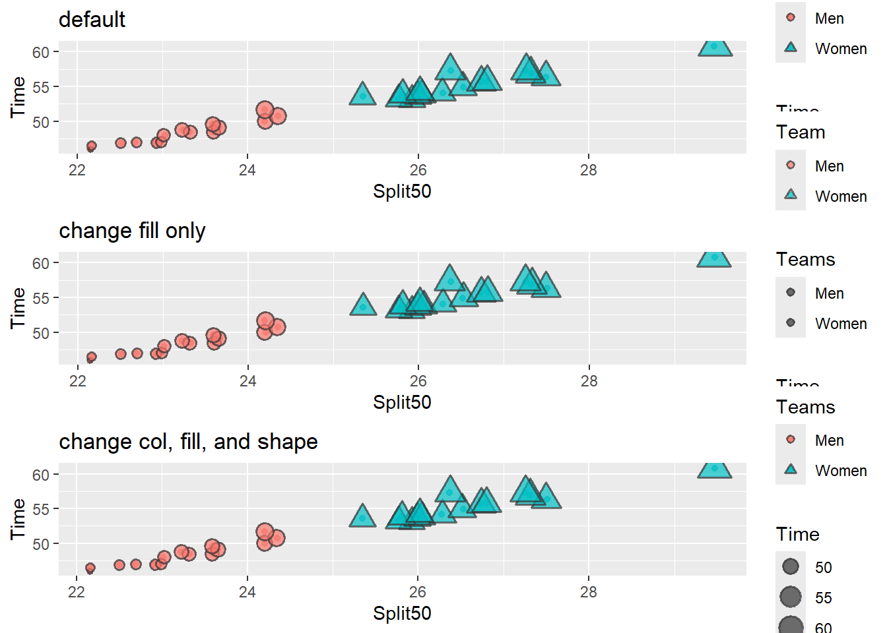
Changing Legend Title Position
You don’t need to change the title using labs(). Here, we change the title and title.position for the color aesthetic only within guide_legend(). Adding other aesthetic changes would be as simple as specifying them in guides().
base_plot_3 +
guides(color = guide_legend(title = "New Title",
title.position = "left"
))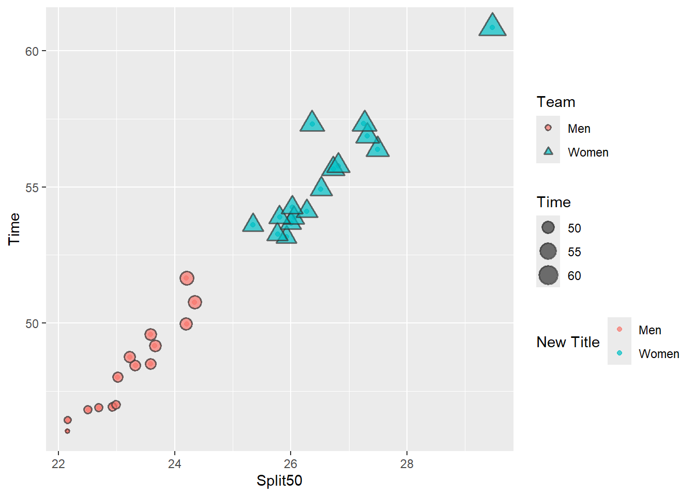
Changing Legend Direction and Label Position
Here, we also change the direction and label.position for the color, size, and shape in guides().
plot3 + guides(
# color aesthetic
color = guide_legend(title = "Color Title",
direction = "horizontal",
title.position = "bottom",
label.position = "top"
),
# the size dimension
size = guide_legend(title = "Size Title",
direction = "vertical",
title.position = "top",
label.position = "top"
),
# the shape aesthetic (does not appear because point all all the same shape)
shape = guide_legend("Shape Title")
) +
theme(legend.position = "bottom")Warning: Using size for a discrete variable is not advised.Warning: Removed 14 rows containing missing values or values outside the scale range
(`geom_point()`).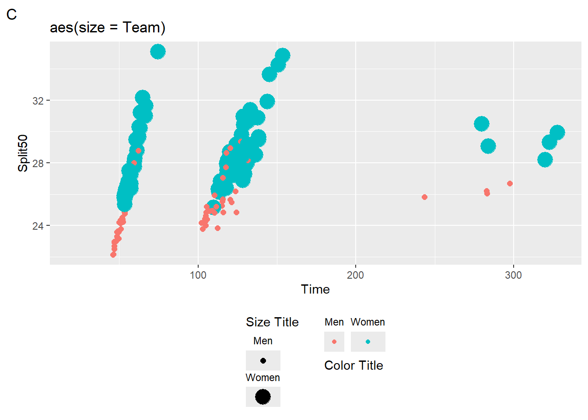
Whether this outcome is appropriate is up for discussion. When you need to change such legend elements, however, the above examples will be helpful.
Session Info
sessionInfo()R version 4.4.1 (2024-06-14 ucrt)
Platform: x86_64-w64-mingw32/x64
Running under: Windows 11 x64 (build 22631)
Matrix products: default
locale:
[1] LC_COLLATE=English_United States.utf8
[2] LC_CTYPE=English_United States.utf8
[3] LC_MONETARY=English_United States.utf8
[4] LC_NUMERIC=C
[5] LC_TIME=English_United States.utf8
time zone: America/Los_Angeles
tzcode source: internal
attached base packages:
[1] stats graphics grDevices utils datasets methods base
other attached packages:
[1] htmltools_0.5.8.1 DT_0.33 vroom_1.6.5 lubridate_1.9.3
[5] forcats_1.0.0 stringr_1.5.1 dplyr_1.1.4 purrr_1.0.2
[9] readr_2.1.5 tidyr_1.3.1 tibble_3.2.1 ggplot2_3.5.1
[13] tidyverse_2.0.0
loaded via a namespace (and not attached):
[1] utf8_1.2.4 generics_0.1.3 stringi_1.8.4 hms_1.1.3
[5] digest_0.6.36 magrittr_2.0.3 evaluate_0.24.0 grid_4.4.1
[9] timechange_0.3.0 fastmap_1.2.0 R.oo_1.26.0 rprojroot_2.0.4
[13] jsonlite_1.8.8 R.utils_2.12.3 gridExtra_2.3 fansi_1.0.6
[17] scales_1.3.0 cli_3.6.3 rlang_1.1.4 crayon_1.5.3
[21] R.methodsS3_1.8.2 bit64_4.0.5 munsell_0.5.1 withr_3.0.1
[25] yaml_2.3.10 tools_4.4.1 tzdb_0.4.0 colorspace_2.1-0
[29] pacman_0.5.1 here_1.0.1 vctrs_0.6.5 R6_2.5.1
[33] lifecycle_1.0.4 htmlwidgets_1.6.4 bit_4.0.5 pkgconfig_2.0.3
[37] pillar_1.9.0 gtable_0.3.5 glue_1.7.0 xfun_0.45
[41] tidyselect_1.2.1 rstudioapi_0.16.0 knitr_1.47 farver_2.1.2
[45] labeling_0.4.3 rmarkdown_2.27 compiler_4.4.1